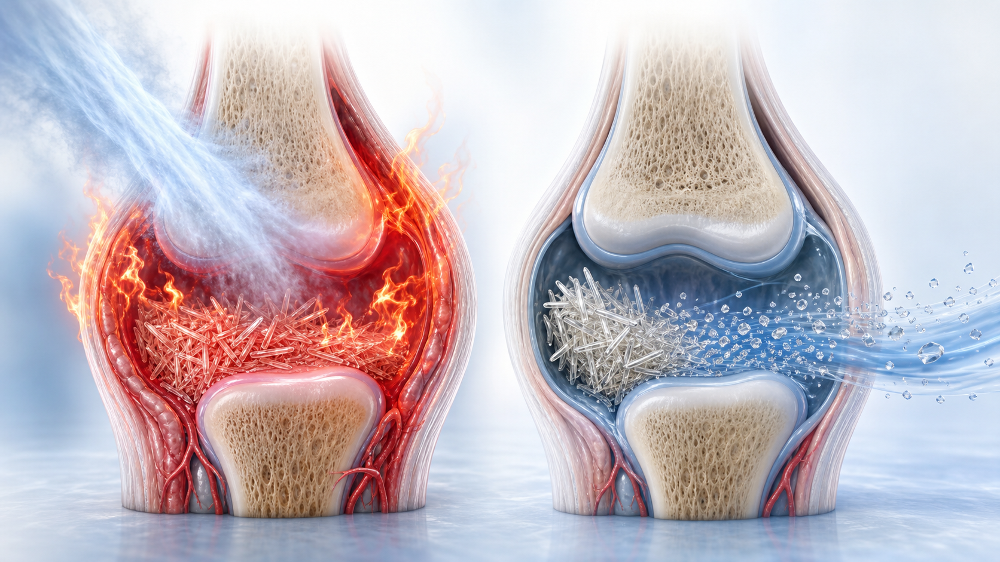
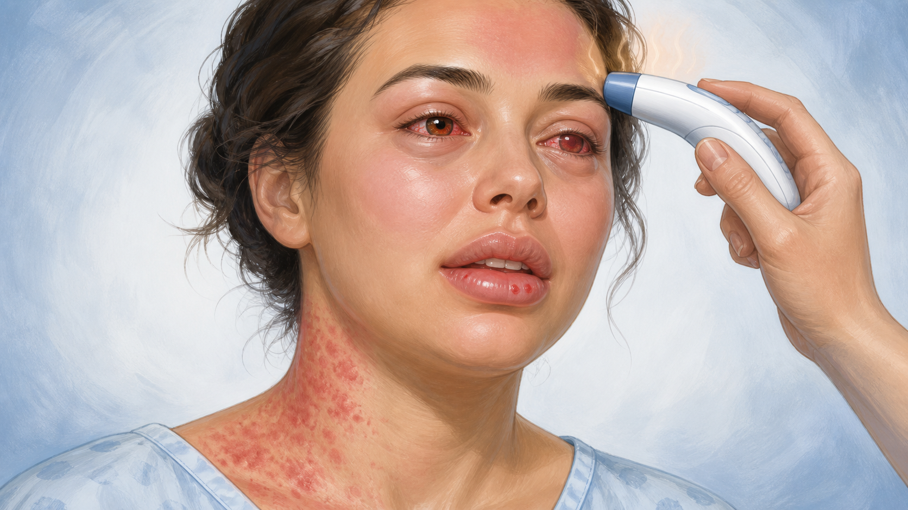
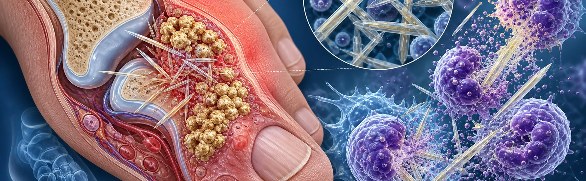
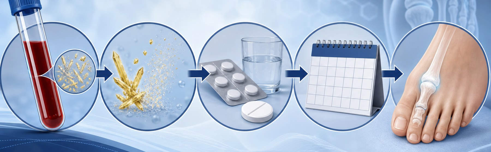

CHAPTER 01 · 지금 아플 때
지금 아플 때 — 먼저 이 네 가지
빨리 알리고 · 관절을 쉬게 하고 · 냉찜질하고 · 드시던 요산 약은 그대로
1
최대한 빨리 알립니다
발작이 시작되면 빨리 알려 주세요. 통증을 가라앉히는 불끄기 약을 함께 씁니다.
드시던 요산 약에 급성 통증 약을 더하는 것입니다.
시작되면 바로 연락
2
관절을 쉬게 합니다
발작이 오면 다치지 않도록 아픈 관절을 쉬게 하세요.
아픈 관절에 무리를 주지 않는 것이 먼저입니다.
아픈 관절은 쉬기
3
찜질은 차갑게 합니다
아픈 부위는 냉찜질을 하세요.
핫팩·온찜질은 혈관을 넓혀 염증을 더 키웁니다.
온찜질 대신 냉찜질
4
드시던 요산 약은 그대로
발작이 와도 요산 약은 그대로 드세요. 스스로 끊지 않습니다.
끊으면 요산이 출렁여 통증이 오히려 오래갑니다.
스스로 끊지 않기
Tip · 아플 때 잰 요산 수치만으로 통풍이 아니라고 단정할 수 없어, 가라앉은 뒤 다시 잽니다.근거 · ACR 2020 · EULAR 2016 · 대한류마티스학회
광교바른내과 · 환자 안내자료 · ⚠️ 교육·참고용 — 치료 결정은 담당 의료진과 상의해 정합니다
02 / 13
CHAPTER 02 · 발작 때 쓰는 약
급성기 약은 세 가지 — 몸 상태를 보고 고릅니다
콩팥·위장·당뇨·심장 상태에 따라 가장 안전한 약을 선택합니다
콜히친 — 저용량으로
고용량과 효과는 비슷하고 부작용은 적습니다. 같이 먹으면 안 되는 약이 있어 복용 중인 약을 알려 주세요.
소염진통제
콩팥에 부담을 줄 수 있어 피하는 경우가 많습니다. 위장 출혈·부종·혈압 상승도 주의합니다.
스테로이드
콩팥이 나쁘거나 위장이 약하거나 피 묽게 하는 약을 드실 때 씁니다. 먹는 약·주사 모두 가능합니다. 혈당을 올리므로 당뇨가 있으면 미리 알려 주세요.
세 약의 효과는 비슷합니다. 어느 약이 센가가 아니라, 지금 내 몸에 가장 안전한 약으로 정합니다.
Tip · 두 가지를 함께 쓰면 부작용도 겹칠 수 있어 신중히 정합니다. 셋 다 어려우면 전문의 진료를 권합니다.근거 · ACR 2020 · EULAR 2016 · APLAR 2021 · 대한류마티스학회
광교바른내과 · 환자 안내자료 · ⚠️ 교육·참고용 — 치료 결정은 담당 의료진과 상의해 정합니다
03 / 13
CHAPTER 03 · 두 종류의 약
불끄기 약과 청소 약은 다릅니다
통증을 끄는 약과 요산을 치우는 약 — 하는 일이 달라 함께 씁니다

불끄기 약발작의 통증과 염증을 가라앉힙니다
청소 약(요산 약)쌓인 요산 결정을 녹여 냅니다
두 약은 하는 일이 다릅니다
통증을 가라앉히는 약과 요산을 녹여내는 약은 별개입니다. 발작 때는 두 약을 함께 씁니다.
청소 약은 오래 유지합니다
요산 약은 조건이 맞으면 시작해 고혈압 약처럼 오래 드십니다.
발작이 와도 끊지 않습니다
이상반응이 없으면 발작 중에도 그대로 드세요. 끊으면 요산이 출렁여 통증이 오히려 오래갑니다.
Tip · 불끄기 약은 지금의 통증을, 청소 약은 다음 발작을 줄이는 일을 맡습니다.근거 · ACR 2020 · EULAR 2016
광교바른내과 · 환자 안내자료 · ⚠️ 교육·참고용 — 치료 결정은 담당 의료진과 상의해 정합니다
04 / 13
CHAPTER 04 · 언제 시작하나
요산 약 — 누가, 언제 시작하나
조건이 맞으면 시작해 오래 유지합니다 — 경우별로 정리했습니다
| 경우 | 이럴 때 | 어떻게 |
|---|---|---|
| 꼭 시작합니다 | 통풍결절이 만져질 때 · 뼈 손상이 있을 때 · 발작이 1년에 두 번 이상일 때 | 강하게 권고됩니다 |
| 상의해서 정합니다 | 콩팥병 3기 이상 · 요산 9 mg/dL 초과 · 요로결석 · 첫 발작이지만 위험 요인이 겹칠 때 | 의료진과 함께 정합니다 |
| 시작하는 때 | 발작이 가라앉고 2~4주 뒤 시작하는 방법이 널리 쓰입니다 | 학회마다 권고가 조금씩 다릅니다 |
| 증상 없이 요산만 높을 때 | 대개 약보다 생활 관리로 봅니다 | 요산결석이나 실제 통풍이 있으면 그 이유로 치료합니다 |
Tip · 요산 약을 시작할지는 수치 하나가 아니라 결절·발작 횟수·콩팥 상태를 함께 보고 정합니다.근거 · ACR 2020 · EULAR 2016 · NICE NG219 2022 · 대한류마티스학회 2022
광교바른내과 · 환자 안내자료 · ⚠️ 교육·참고용 — 치료 결정은 담당 의료진과 상의해 정합니다
05 / 13
CHAPTER 05 · 요산 약 ①
요산 약 ① — 알로푸리놀과 페북소스타트
알로푸리놀이 1차약입니다 — 낮은 용량으로 시작해 목표까지 천천히 올립니다
알로푸리놀 — 첫 번째 약
요산을 낮추는 1차약입니다. 콩팥 기능이 떨어진 분에게도 1차로 강하게 권고되며, 이때는 시작 용량을 더 낮게 잡습니다.
낮게 시작해 천천히 올립니다
요산이 급하게 떨어지면 오히려 발작이 생기고 과민반응 위험도 올라갑니다. 2~5주 간격으로 요산을 재며 목표까지 올립니다.
시작 전 유전자 검사
한국인은 시작 전 HLA-B*58:01 유전자 검사를 권합니다. 이 유전자를 가진 비율이 서양인보다 높아, 양성이면 다른 약으로 바꿉니다.
페북소스타트 — 두 번째 약
알로푸리놀이 맞지 않거나 효과가 부족할 때 씁니다. 심장 위험은 연구마다 결과가 달라, 심장병이 있으면 상의해 정합니다.
Tip · 처음부터 높은 용량으로 시작하지 않는 것은 발작과 부작용을 줄이기 위해서입니다.근거 · ACR 2020 · EULAR 2016 · CPIC · 대한류마티스학회
광교바른내과 · 환자 안내자료 · ⚠️ 교육·참고용 — 치료 결정은 담당 의료진과 상의해 정합니다
06 / 13
CHAPTER 06 · 요산 약 ②③
요산 약 ②③ — 배설을 돕는 약, 잘 듣지 않을 때의 약
소변으로 요산을 내보내는 약과, 표준 치료로 목표에 닿지 않는 중증에만 쓰는 주사약
| 약 | 어떤 약인가 | 꼭 확인할 것 |
|---|---|---|
| 벤즈브로마론 | 소변으로 요산을 내보내는 약으로, 국내에서 실제로 쓸 수 있는 배설 촉진제입니다. 1차약이 맞지 않거나 부족할 때 단독 또는 함께 씁니다. | 드물지만 중대한 간 손상이 있어 간기능을 정기적으로 봅니다 · 요로결석이 있던 분은 쓰지 않고, 쓸 때는 물을 충분히 |
| 페글로티카제 | 표준 요산 약으로 목표에 닿지 못한 중증 결절 통풍에 쓰는 정맥주사약입니다. | 국내에는 아직 도입되지 않아 전문센터 의뢰가 원칙입니다 |
| 라스부리카제 | 이름이 비슷하지만 통풍 약이 아닙니다. 암 치료 중 특수한 상황에만 씁니다. | 페글로티카제와 함께, 적혈구 효소(G6PD)가 부족한 분은 쓸 수 없습니다 |
Tip · 국내 허가·급여 현황은 처방 시점에 다시 확인합니다.근거 · ACR 2020 · EULAR 2016
광교바른내과 · 환자 안내자료 · ⚠️ 교육·참고용 — 치료 결정은 담당 의료진과 상의해 정합니다
07 / 13
CHAPTER 07 · 부작용 신호
약 부작용은 ‘느껴지는 신호’로 기억하세요
아래 신호가 있으면 약을 멈추고 바로 오세요 — 혼자 참지 마세요
알로푸리놀 · 페북소스타트
원인 모를 열, 피부 발진, 입안 짓무름, 눈 충혈, 얼굴 부종 — 즉시 중단하고 오세요.
콜히친
멈추지 않는 심한 설사, 쥐가 나는 듯한 복통, 근육 통증은 독성 신호입니다.
소염진통제 · 스테로이드
검은 변·토혈, 소변량이 갑자기 줄고 붓는 것, 열과 함께 온몸이 쳐지는 느낌.

유전자 검사가 음성이어도 위험이 완전히 없지는 않아, 시작 초기에 발진을 함께 지켜봅니다.
Tip · 알려 주시면 용량을 조절하거나 약을 바꿉니다. 정해진 날짜에 꾸준히 재진받으세요.근거 · ACR 2020 · CPIC · 대한류마티스학회
광교바른내과 · 환자 안내자료 · ⚠️ 교육·참고용 — 치료 결정은 담당 의료진과 상의해 정합니다
08 / 13
CHAPTER 08 · 처음 몇 달
요산 약을 시작하면 처음엔 발작이 늘 수 있습니다
실패가 아니라 예정된 과정 — 그래서 ‘발작을 막는 약’을 같이 씁니다

3~6개월
요산 약을 시작하거나 올릴 때, 발작을 막는 약(저용량 콜히친 또는 저용량 소염진통제)을 함께 쓰는 최소 기간
왜 같이 쓰나
요산이 초기에 급하게 내려가면 오히려 발작이 생길 수 있어, 낮은 용량부터 시작하고 예방약을 처음부터 같이 씁니다.
언제 멈추나
결절이 있거나 발작이 이어지면 더 늘립니다. 목표 수치에 닿고 발작이 없으면 예방약만 멈춥니다.
Tip · 굶거나 극단적인 저탄수화물·고지방 식사는 오히려 발작을 부릅니다. 체중은 천천히 줄이세요.근거 · ACR 2020 · EULAR 2016 · 대한류마티스학회
광교바른내과 · 환자 안내자료 · ⚠️ 교육·참고용 — 치료 결정은 담당 의료진과 상의해 정합니다
09 / 13
CHAPTER 09 · 콩팥 · 심장
콩팥·심장이 안 좋으면 무엇이 달라지나
약을 못 쓰는 것이 아니라, 고르는 약과 시작 용량이 달라집니다
| 이럴 때 | 이렇게 달라집니다 |
|---|---|
| 콩팥이 안 좋을 때 · 발작 | 소염진통제 대신 스테로이드소염진통제는 콩팥에 부담을 줄 수 있어 피하는 경우가 많고, 스테로이드를 먹는 약·주사로 씁니다 |
| 콩팥이 안 좋을 때 · 요산 약 | 알로푸리놀은 그대로 1차약시작 용량만 더 낮추고, 요산을 재면서 올립니다 |
| 심장병이 있을 때 | 알로푸리놀을 먼저 고려페북소스타트는 심장병이 있는 분에서 위험이 논쟁 중입니다 |
| 스스로 끊고 싶을 때 | 끊기 전에 먼저 상의임의로 끊으면 오히려 위험이 커질 수 있다는 자료가 있습니다 |
| 증상 없이 요산만 높을 때 | 대개 약을 쓰지 않습니다요산 약이 콩팥병 진행을 늦춘다는 근거가 부족합니다 |
Tip · 특히 조심할 분 — 고령, 콩팥병·심부전, 피 묽게 하는 약 복용, 위장관 출혈을 겪은 적이 있는 경우.근거 · ACR 2020 · KDIGO · EULAR 2016
광교바른내과 · 환자 안내자료 · ⚠️ 교육·참고용 — 치료 결정은 담당 의료진과 상의해 정합니다
10 / 13
CHAPTER 10 · 식사
식사 — 무엇을 줄이고, 무엇은 그대로 드셔도 되나
동물성 퓨린과 술·단 음료는 줄이고, 콩·두부·버섯 같은 식물성 퓨린은 제한하지 않습니다
그대로 드셔도 되는 것
- 콩·두부·버섯·시금치식물성 퓨린은 발작을 늘리지 않습니다
- 저지방 우유·요구르트오히려 도움이 됩니다
- 커피위험을 낮춘다는 연구가 있습니다
- 살코기 위주로 적정량완전히 끊지 마세요
- 등푸른생선·해산물적당한 양으로
- 천천히 체중 감량굶는 다이어트는 금물
줄여야 하는 것
- 맥주술 중에서 위험이 가장 큽니다
- 소주·양주독주도 요산과 발작을 늘립니다
- 와인위험은 낮지만 총량을 줄이세요
- 콜라·주스·에너지드링크단 음료를 줄이세요
- 곱창·간 등 내장류진하게 우린 곰탕 국물도 줄이세요
- 체리·비타민 C 보충제로 약 대신하기근거가 약합니다
Tip · 식사 조절은 약을 대신하지 않습니다 — 요산 약과 함께 갑니다.근거 · 대규모 코호트·메타분석 · ACR 2020
광교바른내과 · 환자 안내자료 · ⚠️ 교육·참고용 — 치료 결정은 담당 의료진과 상의해 정합니다
11 / 13
CHAPTER 11 · 목표와 추적
목표 수치와 기간, 그리고 바로 오셔야 하는 때
목표에 닿아도 약은 계속 유지합니다 — 콩팥·간기능도 함께 봅니다

6mg/dL 미만
일반적인 목표 — 국내 지침도 같은 기준입니다
5mg/dL 미만
통풍결절이 있거나 중증이면 더 낮게 두기도 합니다
2~5주
시작·증량 중 검사 간격 — 안정되면 6개월쯤마다
얼마나 오래 먹나
목표에 닿아도 대개 오래 드십니다. 결정은 서서히 녹아, 일찍 끊으면 다시 쌓입니다.
임의로 끊으면
요산이 급격히 변해 관절에 쌓인 결정이 흔들리고 통증이 훨씬 오래갑니다. 상의해 정합니다.
바로 오셔야 하는 때
열이 나며 여러 관절이 한꺼번에 아프거나, 한 관절이 갑자기 심해지고 온몸이 쳐질 때.
그림 · 요산 재기 → 결정 녹이기 → 꾸준히 복용 → 정기 검사 → 관절 지키기.근거 · ACR 2020 · EULAR 2016 · NICE NG219 2022 · 대한류마티스학회 2022
광교바른내과 · 환자 안내자료 · ⚠️ 교육·참고용 — 치료 결정은 담당 의료진과 상의해 정합니다
12 / 13
CLOSING
불끄기 약으로 통증을 잡고, 청소 약으로 요산을 낮춥니다
목표는 6 mg/dL 미만 — 꾸준히 유지하면 결절과 발작을 줄일 수 있습니다
광교바른내과
경기 용인 수지구 광교중앙로 298, 4층 · 031-893-4560
평일 08:30~18:30 · 토 08:30~13:30
소화기내과 · 일반내과 · 5대암 검진
평일 08:30~18:30 · 토 08:30~13:30
소화기내과 · 일반내과 · 5대암 검진
이 자료의 성격
통풍으로 치료 중인 분을 위한 설명자료입니다. 약의 선택과 용량은 담당 의사와 정하고, 발작 때 할 일은 통풍 안내문에 정리했습니다.
참고한 자료
미국류마티스학회(ACR) 2020 · 유럽류마티스학회(EULAR) 2016 · 대한류마티스학회 2022 · 영국 NICE NG219 2022 · 아시아태평양류마티스학회(APLAR) 2021 · CPIC 유전자 지침 · KDIGO
다시 보기 · 카톡 공유
광교바른내과 · 환자 안내자료 · ⚠️ 교육·참고용 — 치료 결정은 담당 의료진과 상의해 정합니다
13 / 13